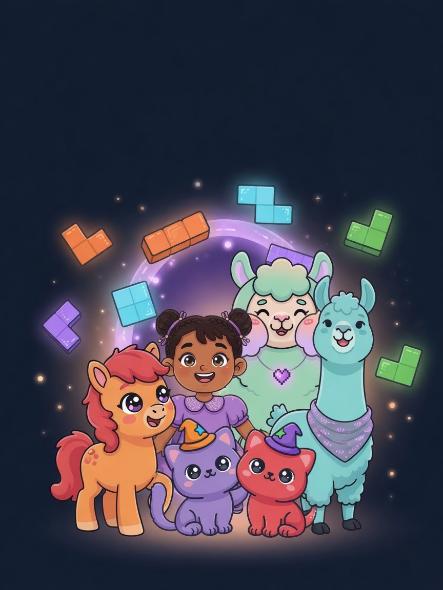
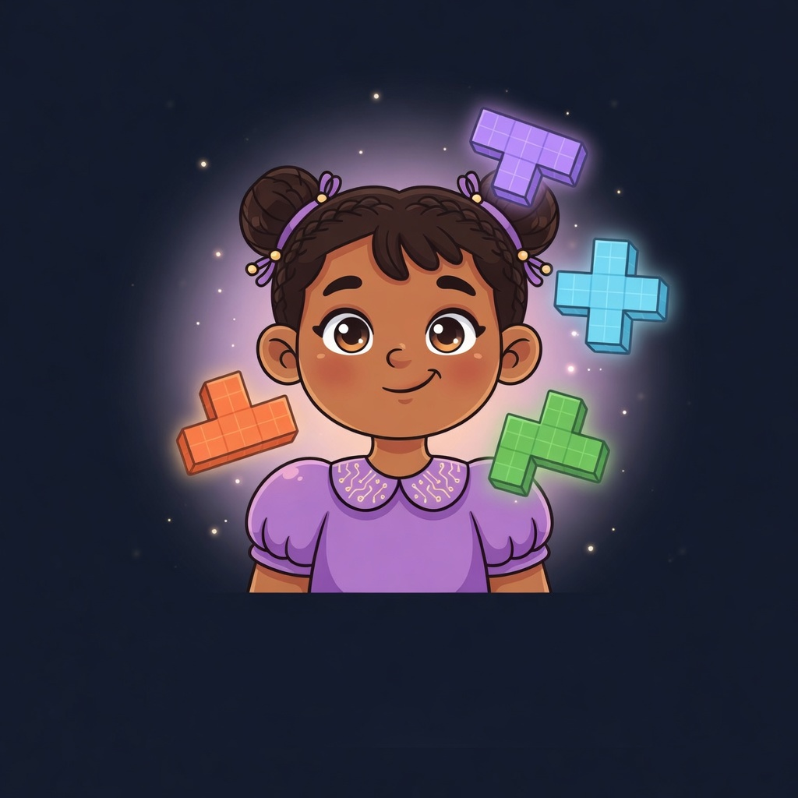
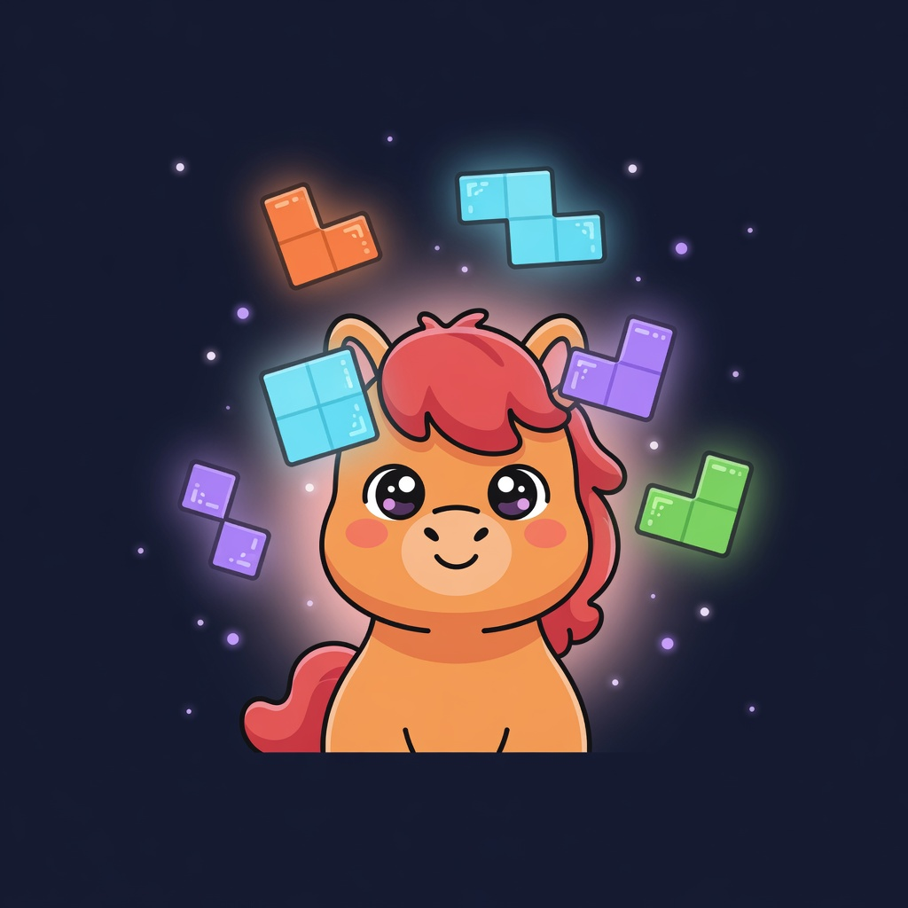
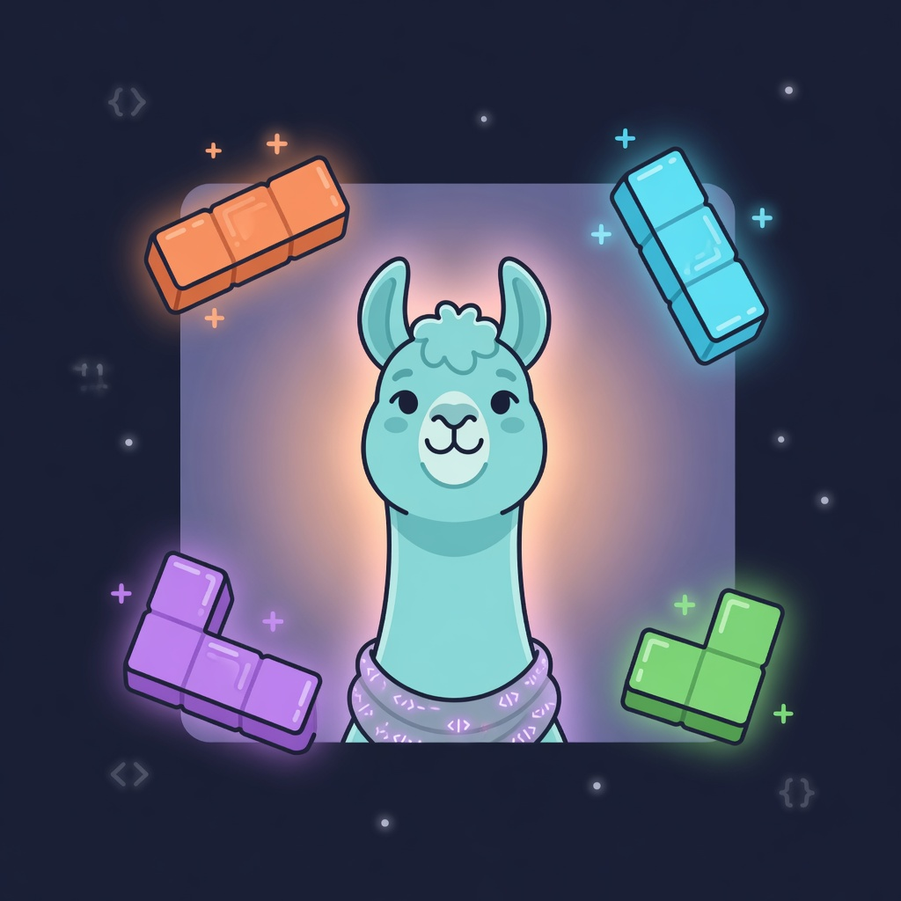
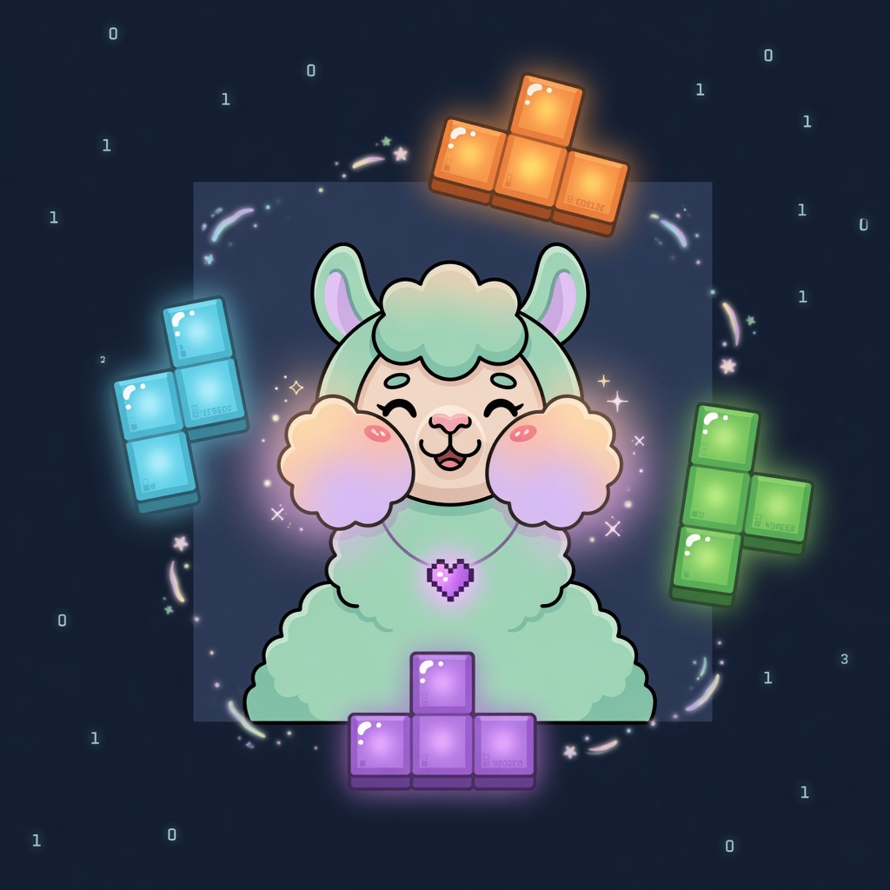
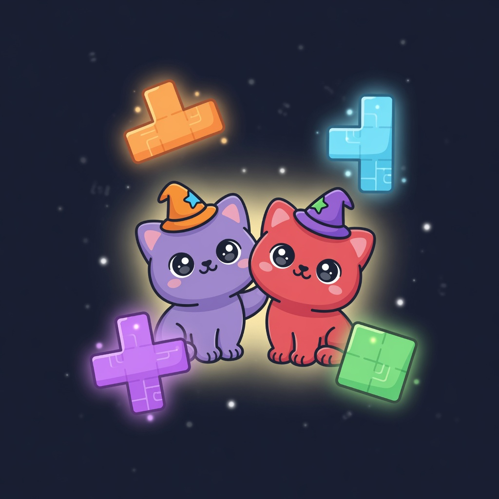
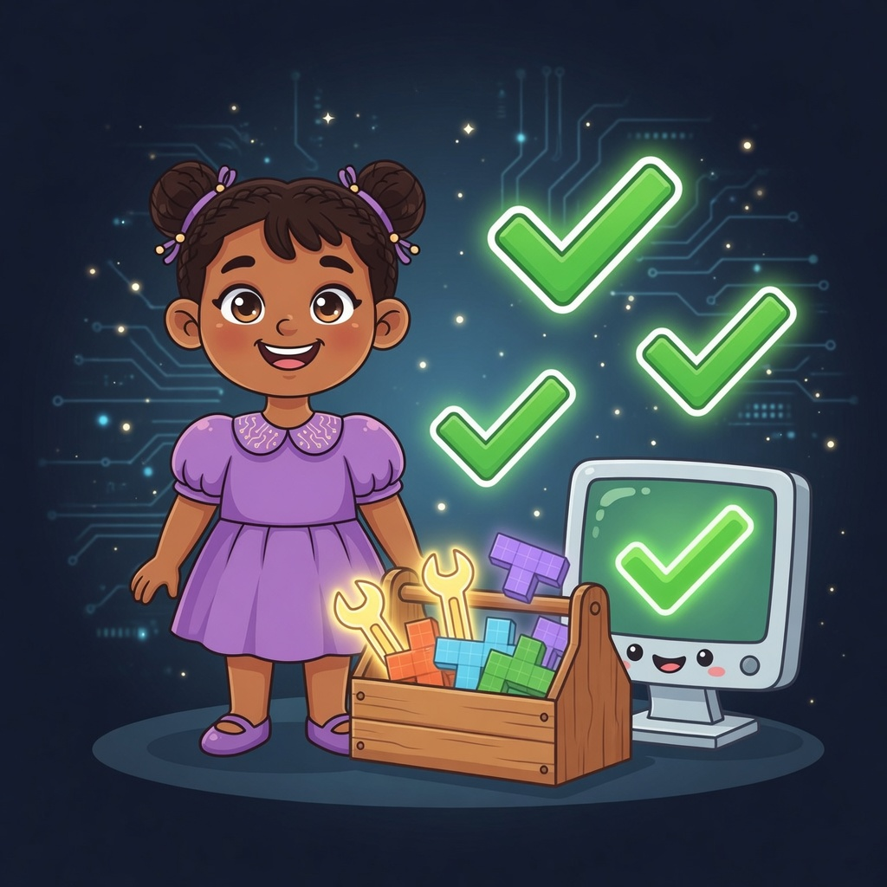
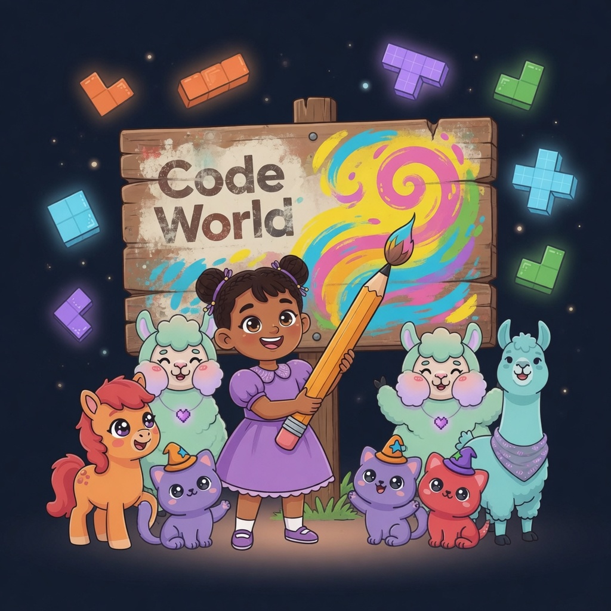
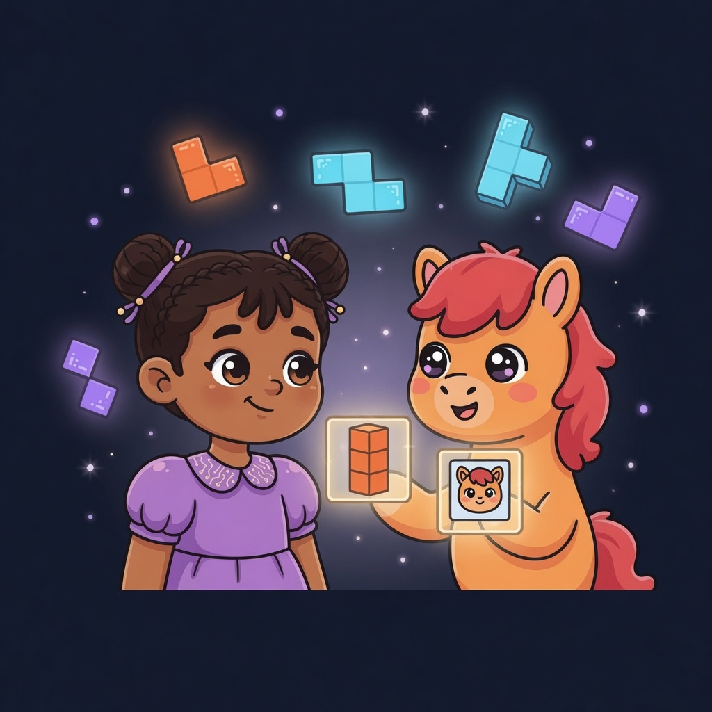

Как маленькая девочка, пони, лама, альпака и два котика построили настоящую игру — и она стала кросс-платформенным разработчиком.

книга-сборник · внутри — настоящий код игры BlockDuel 9×9
Герои этой книги
Они будут рядом все 200 дней. Запоминай лица — дальше они станут учителями, напарниками и контролёрами.

Марьям девочка, которая провалилась внутрь игры и решила её построить

Пони По хранит коробочки-переменные и все снимки истории

Лама Лу любит функции, числа и честную случайность

Альпака Аля учит «если» и «повтори», раскладывает фигурки

Два котика фиолетовый считает, рыжий ловит баги
Как учиться по этой книге
Это не просто сказка — это учебник-курс. Он рассчитан на 200 дней по 3 часа — это шестьсот часов, за которые ребёнок из нуля становится настоящим разработчиком. Спешить не надо: программисты растут не рывком, а каждый день понемногу.
200
дней пути
3 ч
в день
600 ч
до разработчика
Ритм одного дня (3 часа делим на три части — как завтрак, обед и ужин):
🥣 1 час — читаем главу и разбираем код🍲 1 час — набираем код сами, меняем числа, смотрим что будет🍎 1 час — своя маленькая задачка (в конце глав — «Задание»)
Правило для детей: идём по порядку. Сначала неделя 1 (семь вечеров), и только потом глава про переменные. В конце книги — 200-дневная карта. Правило одно: ошибаться — нормально.
Честно и по-взрослому. Марьям в сказке строит игру с нуля. Но настоящая игра — это тысячи строк, и ни один разработчик не пишет их «на память». Секрет профессии другой: берёшь настоящий проект, запускаешь его в первый же день, и растёшь вместе с ним — читаешь, меняешь, чиняешь. Так к концу курса у тебя на экране будет наша игра BlockDuel — собранная твоими руками и понятная тебе до винтика.
Поставь инструменты. Flutter с сайта flutter.dev и бесплатный редактор (VS Code). Один раз — и на всю жизнь.
Скачай настоящую игру и запусти её. Уже в первый день ты увидишь её живой:
git clone https://github.com/alshfu/block-puzzle-pvp
cd block-puzzle-pvp
flutter pub get
flutter run -d chrome # и вот она, наша игра, у тебя в браузере!
Дальше — не «пиши с нуля», а «найди → пойми → поменяй → запусти». Каждую неделю открываешь настоящий файл из проекта, разбираешь его по этой книге и делаешь маленькую правку. Нажал «запустить» — сразу видишь результат. Так знание становится твоим.
Собери и покажи миру. В конце — flutter build под web/Android/iPhone/Mac (глава 15) и документ RELEASE_CHECKLIST.md в проекте: пошагово, как выложить в Google Play и App Store.
🔧 Мини-квесты на НАСТОЯЩЕМ коде (каждый сразу видно в игре)
Поменяй цвета клеток в теме — файл lib/ui/theme/ (темы neutral / candy / night).
Сделай ход быстрее/медленнее — таймер turnTimeStart в lib/core/types.dart (defaultConfig).
Измени формулу очков — lib/core/scoring.dart (например, больше очков за бокс 3×3).
Сделай бота хитрее — веса в lib/core/bot.dart (botWeights).
Добавь свою тему в конструкторе тем прямо в игре (экран «Конструктор тем»).
Напиши свой тест в test/ и запусти flutter test — стань контролёром (глава 12).
📂 Заготовка на каждый день — в самом проекте
В скачанном проекте есть папка course/ — там на каждый из 200 дней свой файл-заготовка: шапка с заданием дня, связь с настоящим кодом игры и место // TODO, куда ты дописываешь свой код.
Открыл файл дня (например course/week03_functions/day015.dart) → прочитал задание → сначала подумал сам → написал код на месте TODO → запустил → сравнил с настоящим файлом игры.
Итог курса: не «похожая игрушка», а наша игра целиком — ты её запустил, понял, поменял под себя, покрыл тестами и собрал под четыре платформы. Это и есть настоящий разработчик.
Глава 00 · Пролог · Неделя 1 · дни 001–007
Портал из блока
С детьми идём только по порядку. Семь вечеров — семь страниц. Сначала смотрим картинку: по ней должно быть ясно, какая сегодня тема. Потом читаем, потом одно дело вместе — и книгу закрываем. Завтра — следующий день. Не листайте вперёд.
День 1 · из 200 · тема: инструменты
Ставим инструменты

Тема дняСтавим инструменты и проверяем
Что видно: ящик с гаечными ключами и кубиками, компьютер с большой зелёной галочкой. Галочки = доктор сказал «всё хорошо».
Марьям было восемь, и больше всего на свете она любила складывать. Кубики, пазлы, слова из букв — что угодно, лишь бы из маленького получалось большое.
В тот дождливый вечер она играла в игру на старом планшете: разноцветные фигурки-тетромино падали на сетку, и когда ряд заполнялся целиком — вжух! — он вспыхивал и исчезал.
И вдруг посередине экрана открылся портал. Фиолетовый. Из тех самых кубиков. Марьям остановилась и смотрела.
🎯 Задание дня — вместе с папой
Откройте сайт flutter.dev.
Поставьте Flutter (папа нажимает, ребёнок смотрит, куда кладутся файлы).
В терминале напишите flutter doctor и нажмите Enter.
Готово, когда доктор Flutter ответил и не испугался. Сегодня больше ничего не надо.
День 7 · из 200 · мини-проект · тема: меняем слова
Свои слова на экране

Тема дняМеняем слова на экране
Что видно: Марьям закрашивает старую вывеску своим рисунком. Сегодня вы так же поменяете слова BlockDuel на своё приветствие — и игра скажет его вслух.
Из портала вышли четверо: рыжий пони, высокая лама, пушистая альпака и два маленьких котика. «Игра, из которой ты выпала, — тоже записана, — сказал тёплый голос. — Хочешь, научим тебя её строить?»
Марьям кивнула так быстро, что чуть не потеряла бантик.
★ Что такое программа
Программа — это очень точный список указаний, записанный так, что его понимает компьютер.
Игра, сайт, приложение — всё это программы. Мы будем строить игру BlockDuel 9×9: тетромино на доске 9×9, как та, из которой выпала Марьям.
Язык, на котором мы напишем игру, называется Dart, а её «тело» — Flutter.
🎯 Мини-проект недели
Вместе найдите на экране игры большое слово BlockDuel.
Папа откроет файл lib/ui/widgets/logo.dart. Ребёнок меняет слова Block и Duel на своё приветствие, например:
Привет, я Марьям!
Снова flutter run -d chrome — и смотрите: игра поздоровалась вашими словами.
Неделя 1 закрыта, когда на экране видно ваше «Привет, я Марьям!». Дальше — только глава 01, день 8. Не раньше.
Глава 01 · Данные · Неделя 2 · дни 008–014
Пони По и коробочки-переменные
спутник главы — рыжий пони По
Неделю 1 закрыли. Теперь семь вечеров про коробочки. По картинке сразу видно тему дня. Не прыгаем в неделю 3.
День 8 · из 200 · тема: две коробочки
Коробочки с именами

Тема дняПеременная — коробочка с подписью
Что видно: две коробочки. В одной — число (очки score), в другой — имя (nick). Подпись снаружи, значение внутри.
Рыжий пони топнул копытцем и представился: «Я — По. Чтобы компьютер что-то запомнил, мы кладём это в переменную — коробочку с подписью».
🎯 Задание дня — вместе с папой
Откройте файл дня course/week02_variables/day008.dart.
Напишите: int score = 0;
Рядом: print(score); и запустите.
Готово, когда в консоли появился ноль. Сегодня только одна коробочка.
Что видно: кубики справа едут в коробку слева. Знак = в коде — не «равно как в школе», а «возьми то, что справа, и положи налево».
По нарисовал стрелку. «Сначала считается то, что справа, потом кладётся в имя слева. Поэтому пишем score = score + 15, а не наоборот.»
заклинание По Dart
int score = 0; // коробочка с числом: очки игрокаString nick = "Марьям"; // коробочка с буквами: имя
score = score + 15; // очистили ряд — прибавили 15 очков
Дальше день-картинки ещё рисуются — а обложки недель уже готовы. Каждую можно раскрыть в свою неделю страниц-дней по образцу выше.
Неделя 7 КлассыНеделя 8 Доска 9×9Неделя 9 Честная случайностьНеделя 10 Мешок фигурНеделя 11 Фигуры-тетроминоНеделя 12 ПоворотыНеделя 13 Закон «сюда можно?»Неделя 14 Постановка и очисткаНеделя 15 Счёт и комбоНеделя 16 Перебор ходовНеделя 17 Оценка ходаНеделя 18 Бот целикомНеделя 19 Первый экранНеделя 20 Доска виджетамиНеделя 21 Ввод (тап)Неделя 22 Сервер и WebSocketНеделя 23 Два игрокаНеделя 24 Рейтинг ELOНеделя 25 ТестыНеделя 26 Красный → зелёныйНеделя 27 Git — машина времениНеделя 28 Баги и сборкаНеделя 29 Финал 🎉
Глава 02 · Данные-2 · 🎨 image-promt/day036–056
Котики и сетка 9×9
спутники главы — два котика
Два котика катали клубок из клеток. «Мы — Котики, — мурлыкнули они хором. — Одна коробочка хранит одно. А если нужно много — берут список. А доска — это список списков: строки, а в каждой строке — клетки».
Каждая клетка знает про себя две вещи: занята ли она и чья она (какого игрока). Котики слепили это в маленькую коробочку Cell, а потом собрали из клеток целую доску 9×9 — совсем пустую, как в начале партии.
заклинание Котиков lib/core/board.dart
class Cell {
finalbool filled; // клетка занята?finalint? owner; // чья она (0 или 1), либо ничья — null
Cell({this.filled = false, this.owner});
}
// Доска — это список списков клеток (строки × столбцы).typedef Board = List<List<Cell>>;
// Пустая доска 9×9: девять строк, в каждой девять пустых клеток.
Board emptyBoard() => [
for (int r = 0; r < 9; r++)
[for (int c = 0; c < 9; c++) Cell()],
];
Чтобы узнать клетку в строке r и столбце c, пишем board[r][c]. Первый номер — этаж, второй — квартира.
★ Что ты выучил
СписокList хранит много значений по порядку, по номерам (с нуля!).
class — своя коробочка из нескольких полей (у Cell их два).
Сетку удобно хранить как список списков: board[r][c].
Глава 03 · Честная случайность · 🎨 image-promt/day057–070
Предсказуемое волшебство
снова лама Лу — она любит числа
«Игре нужна случайность, — сказала Лу, — какая фигурка выпадет следующей. Но есть секрет: наша случайность честная и предсказуемая. Если начать с одного и того же зерна (seed) — выпадет ровно та же цепочка. Тогда игру можно точно повторить, сравнить на двух устройствах и поймать жуликов».
Это волшебство называют генератор псевдослучайных чисел. Наш зовётся mulberry32. Он берёт число-зерно и каждым вызовом превращает его в новое, вроде бы «случайное», но всегда одинаковое для одного зерна.
заклинание честной случайности lib/core/rng.dart
class Mulberry32 {
int _state;
Mulberry32(int seed) : _state = seed & 0xFFFFFFFF; // зерно// Каждый вызов возвращает число от 0 до 1 — но по строгой формуле.double next() {
_state = (_state + 0x6D2B79F5) & 0xFFFFFFFF;
int t = _state;
t = (t ^ (t >>> 15)) * (1 | t);
t = ((t + (t ^ (t >>> 7)) * (61 | t)) ^ t) & 0xFFFFFFFF;
return ((t ^ (t >>> 14)) & 0xFFFFFFFF) / 4294967296;
}
}
Два игрока с одним зерном увидят одну и ту же последовательность фигур. Волшебство, которое можно повторить, — самое надёжное.
★ Что ты выучил
Зерно (seed) задаёт всю цепочку «случайных» чисел.
Одинаковое зерно → одинаковый результат. Это называют детерминизмом.
В игре это даёт честность: повтор партии, сравнение, защита от обмана.
Глава 04 · Формы · 🎨 image-promt/day071–085
Семь фигур-тетромино
Аля раскладывает фигурки
«В игре семь фигурок, — Аля разложила их веером. — Их зовут буквами, на которые они похожи: I, O, T, S, Z, J, L. Каждая — это просто список клеточек, которые она занимает».
Фигурку удобно описать как набор координат: «сдвинься на столько-то вправо и вниз от угла». Тогда фигурку можно поворачивать и переносить — а компьютер знает, какие клетки она накроет.
заклинание форм lib/core/pieces.dart
// Coord — одна клеточка фигуры: сдвиг по строке (r) и столбцу (c).class Coord { finalint r, c; Coord(this.r, this.c); }
// Фигура T: три клетки в ряд и одна сверху по центру.final tPiece = [
Coord(0, 1), // ▢ верхняя клетка
Coord(1, 0), Coord(1, 1), Coord(1, 2), // ▢▢▢ нижний ряд
];
Форма — это данные, а не картинка. Из координат мы потом и нарисуем фигуру, и проверим, поместится ли она.
★ Что ты выучил
Сложную форму можно описать простыми координатами.
Данные важнее картинки: из данных родится и картинка, и логика.
Семь фигур I O T S Z J L — весь «алфавит» тетромино.
Глава 05 · Проверки · 🎨 image-promt/day086–092
Закон мира: «сюда можно?»
По следит за порядком
«Каждый мир держится на законах, — строго сказал По. — Наш закон: фигуру можно ставить, только если все её клетки попадают на доску и ни одна не наезжает на занятую. Проверим — и разрешим либо откажем».
Марьям взяла оранжевую фигурку, поднесла к углу — и сама увидела: одна клетка вылезает за край. «Значит, нельзя!» — сказала она. По кивнул: «Именно это и решает функция ниже. Она обходит клетки фигуры и, чуть что не так, сразу говорит "нет"».
закон постановки lib/core/board.dart
// Можно ли поставить фигуру cells с углом в (r, c)?bool canPlace(Board board, List<Coord> cells, int r, int c) {
for (final cell in cells) {
final rr = r + cell.r, cc = c + cell.c;
if (rr < 0 || rr >= 9 || cc < 0 || cc >= 9) returnfalse; // за краемif (board[rr][cc].filled) returnfalse; // клетка занята
}
returntrue; // все клетки прошли проверку — ставить можно!
}
Здесь встретилось всё сразу: функция, цикл for, if, список и доска. Ты уже умеешь читать настоящий игровой код.
★ Что ты выучил
Функция может вернуть true/false — «да» или «нет».
«Ранний выход»: нашли нарушение — сразу return false, дальше не проверяем.
Правила игры — это просто аккуратные проверки.
Глава 06 · Правила и счёт · 🎨 image-promt/day093–105
Линии гаснут, очки летят
котики считают очки
Котики завозились: «Самое вкусное! Когда ряд, столбик или квадрат 3×3 заполнен целиком — он гаснет, освобождая место. А очки за это получает тот, чей ход всё завершил».
Сначала мы находим все полные линии, потом очищаем их, потом зовём формулу Лу из главы 02 — и добавляем очки игроку. Всё, что ты выучил, сходится в один красивый ход.
ход целиком lib/core/board.dart + scoring.dart
// Найти номера полностью заполненных строк.
List<int> fullRows(Board board) {
final rows = <int>[];
for (int r = 0; r < 9; r++) {
if (board[r].every((cell) => cell.filled)) rows.add(r); // вся строка занята
}
return rows;
}
// После постановки: очистить линии и начислить очки ходившему.int cleared = fullRows(board).length + fullCols(board).length;
player.score += scoreForMove(cleared, player.combo, isPerfect);
Обрати внимание: мы переиспользуемscoreForMove из главы 02. Хорошо написанная функция служит много раз.
★ Что ты выучил
.every(...) — «все ли элементы подходят?» короткая проверка списка.
Большое действие складывается из маленьких, уже знакомых.
Правила + счёт = сердце игры. И оно у нас уже бьётся.
Глава 07 · Искусственный ум · 🎨 image-promt/day106–125
Котёнок, который научился думать
фиолетовый котик учится «думать»
«А если рядом нет второго человека?» — спросила Марьям. Фиолетовый котик прищурился: «Тогда играет бот — котёнок с искусственным умом. Он не колдует: он просто перебирает все ходы, каждому ставит оценку и выбирает лучший».
Это и есть большой секрет «умных» программ: они пробуют много вариантов и выбирают тот, что по нашим правилам лучше. Чем умнее бот — тем дальше он заглядывает и тем хитрее считает оценку.
ум бота lib/core/bot.dart
CandidateMove? chooseBotMove(Board board, List<Piece> hand) {
final moves = enumerateMoves(board, hand); // все возможные ходыif (moves.isEmpty) returnnull; // ходов нет — пас// Оценить каждый ход и поставить лучший вперёд.
moves.sort((a, b) => scoreOf(b) - scoreOf(a));
return moves.first; // самый выгодный ход
}
«Умно» — не значит «магия». Это перебрать варианты и выбрать лучший по честной оценке. У нас есть три бота: полегче, средний и хитрый.
★ Что ты выучил
Бот = перебор ходов + оценка + выбор лучшего.
sort раскладывает список по порядку — тут от лучшего к худшему.
Искусственный ум — это чёткие правила, а не волшебство.
Глава 08 · Фронтенд · 🎨 image-promt/day126–145
Лицо игры
теперь ведёт сама Марьям
До сих пор всё было «под капотом»: числа, списки, правила. Но игрок ничего этого не видит — он видит картинку. То, что человек видит и трогает, зовётся фронтенд. Марьям взяла кисть из света: «Давайте нарисуем доску!»
Во Flutter картинку строят из кирпичиков — виджетов. Виджет — это «нарисуй вот такой кусочек». Мы просто пробегаем по доске и для каждой клетки рисуем квадратик: пустой — светлый, занятый — цветной, под своего игрока.
рисуем доску lib/ui/widgets/board_view.dart
Widget build(BuildContext context) {
return GridView.count(
crossAxisCount: 9, // 9 клеток в ряд
children: [
for (final row in board)
for (final cell in row)
Container(
color: cell.filled
? colorFor(cell.owner) // занята — цвет игрока
: emptyColor, // пусто — светлый фон
),
],
);
}
Тот же цикл for из главы 03 — только теперь он не считает, а рисует. Данные и картинка встретились.
★ Что ты выучил
Фронтенд — то, что видит и трогает человек.
Во Flutter экран собирают из виджетов, как из кубиков.
Картинка рождается из данных: пробежались по доске — нарисовали клетки.
Глава 09 · Бэкенд · 🎨 image-promt/day146–165
Двое через океан
Лу протягивает нить связи
«А если два человека — на разных концах Земли?» — Марьям представила подружку в другой стране. Лу улыбнулась: «Тогда нужен сервер — умный посредник, который живёт в интернете и передаёт ходы туда-сюда. Всё, что не на экране, а "на той стороне", зовут бэкенд».
Наш сервер написан на TypeScript. Он слушает игроков по «телефонной линии» WebSocket: пришёл ход — проверил, применил, разослал обоим. А ещё он считает рейтинг ELO: побеждаешь сильного — рейтинг растёт сильнее.
Главное правило бэкенда: сервер — судья. Он не верит игрокам на слово и всё проверяет сам — чтобы никто не смошенничал.
★ Что ты выучил
Бэкенд — часть программы «на той стороне», в интернете.
Сервер передаёт ходы между игроками и остаётся честным судьёй.
WebSocket — живая двусторонняя связь; ELO — справедливый рейтинг.
Глава 10 · Качество · 🎨 image-promt/day166–172
Зверята-контролёры: тесты
Аля надевает жилетку контролёра
«Игра большая, — вздохнула Марьям, — а вдруг я что-то поменяю и случайно сломаю?» Аля улыбнулась и надела оранжевую жилетку: «Для этого есть тесты. Тест — это крошечная программа, которая проверяет: даёт ли игра правильный ответ? Написал раз — и потом хоть каждую минуту проверяй всю игру за секунду».
Тест устроен просто: «сделай вот так — и я жду вот такой ответ». Если ответ совпал — тест зелёный, всё хорошо. Если нет — тест красный, и ты сразу знаешь: что-то сломалось, чини прямо сейчас, пока не забыл.
проверки-контролёры test/…_test.dart
test('одна линия без серии даёт 10 очков', () {
final s = scoreForMove(1, 0, false);
expect(s, 10); // ждём РОВНО 10 — иначе тест красный
});
test('одно зерно — одна и та же цепочка фигур', () {
final a = Bag(4242);
final b = Bag(4242);
expect(a.draw().type, b.draw().type); // должны совпасть (детерминизм!)
});
expect(что_получили, что_ждали) — сердце теста. В нашей игре таких проверок больше пятисот, и все они зелёные. Это как армия зверят, что днём и ночью стерегут игру.
🍎 Задание дня
Прочитай оба теста вслух — как приказ контролёру: «сделай… жду…».
Придумай на бумаге ещё один тест для scoreForMove: например, «две линии с серией 3 → жду 26».
Подумай: почему хорошо, что тест красный, а не «молча сломался»?
★ Что ты выучил
Тест — маленькая программа-проверка: «сделай так — жду такой ответ».
expect(...) сравнивает полученное с ожидаемым.
Зелёные тесты = спокойствие; можно смело менять код — контролёры поймают ошибку.
Глава 11 · Отладка · 🎨 image-promt/day173–178
Охота на баги
котики становятся детективами
Котики нацепили крошечные шляпы детективов. «В любой большой программе прячутся баги — маленькие ошибки-жучки, — сказали они. — Это не стыдно! Багов не боятся, на них охотятся. Нашёл, понял, починил — и обязательно поставил тест, чтобы жучок не вернулся».
Расскажем про двух настоящих жучков, которых мы поймали в этой самой игре.
Жучок №1 — «Счёт, который забывал себя». Когда интернет на секундочку моргал, игрок переподключался, и сервер снова говорил «здравствуй». А код по ошибке на каждое «здравствуй» обнулял набранные за матч очки-достижения. Обидно! Детективы поняли: сбрасывать надо не на «здравствуй», а только если начался по-настоящему новый матч — у каждого матча есть свой номер matchId.
// БЫЛО (жучок): сбрасывали счётчики на КАЖДОЕ "здравствуй" —// даже когда матч тот же, просто моргнул интернет.
resetMatchAcc: true,
// СТАЛО: сбрасываем ТОЛЬКО если это другой матч (по его номеру).final freshMatch = game.matchId != _accMatchId;
resetMatchAcc: freshMatch, // тот же матч после обрыва — счёт цел!
Один жучок — а обидел бы каждого, у кого моргает интернет. Теперь его сторожит новый тест: «переподключение НЕ обнуляет счёт».
Жучок №2 — «Задания, застрявшие во вчера». Каждый день игроку дают новые задания. Но программа вычисляла «какой сегодня день» один раз при запуске и больше не проверяла. Если приложение не закрывали, то после полуночи оно застревало на вчерашних заданиях. Детективы добавили привычку: перед каждым действием тихо спросить — а день ещё тот же?
починка жучка №2 lib/daily/daily_controller.dart
// Перед каждым действием проверяем: не наступил ли новый день?void refreshDay() {
final today = _todayKey();
if (state.dayKey != today) { // день сменился!
state = DailyState.fresh(today); // выдаём свежие задания
}
}
Тот же жучок жил ещё в двух местах (недельные и сезонные задания) — детективы поймали всех троих одним приёмом. Ошибки любят прятаться семьями.
🍎 Задание дня
Расскажи своими словами, что делал каждый жучок и почему это плохо.
Правило детектива: «починил баг — добавь тест». Зачем? (Подсказка: чтобы жучок не вернулся незаметно.)
Вспомни свою ошибку в жизни. Как «тест» (проверка) помог бы не повторить её?
★ Что ты выучил
Баг — маленькая ошибка в коде. Их не стыдятся, а находят и чинят.
Отладка — это как детектив: найти, понять причину, починить.
Золотое правило: починил → поставь тест, чтобы ошибка не вернулась.
Бонус-глава · Крепость · 🎨 сервер-крепость
Как мы сделали сервер несокрушимым
лама Лу укрепляет крепость
Лу привела Марьям к башне-серверу. «Помнишь, сервер — это судья для двух игроков. А судья должен быть надёжнее всех. К нам приходил злой критик и кричал, что наша крепость — картонная. Мы проверили каждый камень. Кое-где и правда были щели — и мы их заделали. Пойдём, покажу трёх самых опасных жучков-великанов».
Великан №1 — «Одно словечко роняло всю башню». Оказалось: если прислать серверу пустышку-сообщение null, он спотыкался и падал целиком — вместе со всеми игроками разом. Лу нахмурилась: «Судья не имеет права падать от кривого письма». Теперь сервер сначала смотрит, что письмо вообще письмо, а уж потом читает. И на самый крайний случай поставили «последнюю линию обороны».
щит от кривых писем server/room.ts + index.ts
// Проверяем письмо ДО того, как его читать:if (msg === null || typeof msg !== "object") return; // не падаем// Последняя линия обороны: одна ошибка не роняет всю башню.
process.on("uncaughtException", (err) => console.error(err));
Раньше любой мог уронить сервер одним сообщением. Теперь — нет. И это стерегут первые серверные тесты (их не было вовсе!).
Великан №2 — «Рейтинг, который забывался». Сервер копил рейтинг игроков в памяти и записывал на диск с ленцой. При перезапуске или внезапном падении последние результаты пропадали. Лу покачала головой: «Соревнование без надёжного рейтинга — это не соревнование». Мы научили сервер сохранять рейтинг перед выключением, каждую минуту на всякий случай, и бережно прятать файл, если он вдруг испортился.
рейтинг не теряется server/index.ts + leaderboard.ts
process.on("SIGTERM", () => leaderboard.flushNow()); // перед штатным выключением
setInterval(() => leaderboard.flushNow(), 60_000); // и раз в минуту — на случай// внезапного падения
Теперь рейтинг переживает и штатную остановку, и жёсткий краш, и порчу файла. Три щита вместо одной щели.
Великан №3 — «Мёртвые телефоны». Когда у игрока пропадала связь, его «телефон» иногда оставался «как бы поднятым» — и он не мог вернуться в игру. Лу придумала сердцебиение (heartbeat): сервер раз в полминуты спрашивает «ты живой?» и мягко кладёт трубку тем, кто молчит. Тогда игрок сразу может переподключиться. А сопернику мы теперь вежливо говорим: «он вернулся!» — чтобы не висел баннер «соперник вышел».
сердцебиение сервера server/index.ts
// Каждые 30 секунд: «ты живой?» — и отключаем молчунов.
setInterval(() => {
for (const ws of clients) {
if (!alive.get(ws)) ws.terminate(); // молчит — кладём трубкуelse { alive.set(ws, false); ws.ping(); } // пинг «ты живой?»
}
}, 30_000);
Мёртвые соединения больше не держат место. Обрыв связи — не конец: игрок вернётся, а соперник это увидит.
🍎 Задание дня
Объясни, почему судья-сервер должен быть надёжнее обычного игрока.
Мы спасли рейтинг тремя способами. Назови их и скажи, от чего каждый.
Что такое «сердцебиение» и зачем оно? Придумай, где ещё в жизни полезна проверка «ты живой?».
★ Что ты выучил
Сервер-судья обязан быть устойчивым: кривой ввод не должен его ронять.
Важные данные защищают несколькими щитами (перед выключением + периодически + бэкап).
Heartbeat находит мёртвые соединения; критику отвечают не обидой, а проверенными фиксами и тестами.
Глава 12 · Машина времени · 🎨 image-promt/day179–185
Git: как не потерять свою работу
По хранит все снимки истории
«А что, если я всё поломаю и не смогу вернуть, как было?» — испугалась Марьям. По подкатил волшебный сундук: «Для этого есть Git — машина времени для кода. Каждый раз, когда что-то получилось, ты делаешь коммит — снимок-фотографию всего проекта с подписью. Захотел вернуться в прошлое — открыл нужный снимок. Ничего не пропадает».
Каждый коммит — как сохранёнка в игре: «здесь у меня всё работало». А ещё Git умеет отправлять код в облако (сайт GitHub) — чтобы он не жил только на твоём компьютере и чтобы можно было работать вместе с друзьями.
заклинания машины времени терминал · git
git init # создать сундук истории в проекте
git add . # положить в сундук все изменения
git commit -m "сделал доску 9x9"# снимок с подписью — что сделал
git log # посмотреть всю историю снимков
git checkout <снимок> # вернуться в прошлое (осторожно!)
git push # отправить снимки в облако GitHub
Подпись у коммита — важная: «что ты сделал». У нашей игры за одну только эту книгу набралось больше пятидесяти таких снимков-коммитов.
🍎 Задание дня
Заведи первый в жизни репозиторий: git init в папке с игрой.
Сделай три коммита с честными подписями: что менял — то и напиши.
Посмотри git log — это твоя личная летопись. Гордись ею!
★ Что ты выучил
Git — машина времени: сохраняет снимки (коммиты) всего проекта.
Хорошая подпись коммита говорит, что ты сделал — будущему себе спасибо.
GitHub — облако для кода: не потеряешь и сможешь работать вместе.
Глава 13 · Кросс-платформа · 🎨 image-promt/day186–195
Один код — четыре мира
Аля собирает игру для всех
«А на чём будут играть?» — спросила Марьям. Аля подмигнула: «В том и чудо Flutter: мы пишем один код, а собрать его можно сразу для многих устройств. Это называют кросс-платформенностью».
Одной командой игра превращается в сайт для браузера, в приложение для телефона Android, для iPhone и для компьютера Mac. Один труд — четыре мира.
собрать для всех терминал
flutter build web # игра в браузере
flutter build apk # приложение для Android
flutter build ios # приложение для iPhone
flutter build macos # программа для Mac
Четыре мира — из одной кодовой базы. Ты фронтенд-разработчик (лицо игры), бэкенд-разработчик (сервер) и делаешь это кросс-платформенно.
★ Что ты выучил
Кросс-платформа — один код, много устройств.
Команда flutter build «печёт» готовое приложение.
Ты соединила три роли: фронтенд + бэкенд + сборка под все платформы.
Глава 14 · Эпилог · 🎨 image-promt/day196–200
Игра готова
И вот всё сошлось. Коробочки По хранили данные. Функции Лу считали очки. Развилки и карусели Али вели логику. Котики держали доску и правила. Честная случайность выдавала фигуры. Бот научился думать, виджеты нарисовали лицо, а сервер соединил игроков через океан. Марьям смотрела на экран — и на нём светилась настоящая игра, та самая, из которой она когда-то выпала. Только теперь она знала про неё всё. Потому что построила её сама.
«Ты пришла сюда игроком, — сказал По, — а уходишь разработчиком. Ты умеешь и лицо игры (фронтенд), и её сердце на сервере (бэкенд), и собрать всё это сразу для четырёх миров». Марьям улыбнулась. Фиолетовый блок снова засветился — пора домой. Но теперь она уносила с собой самое главное: всё вокруг кто-то придумал и записал. А значит — и она может.
Конец — и начало.
★ Кем ты стала за эту книгу
Знаешь переменные, функции, if/for, списки и классы — азбуку любого языка.
Понимаешь детерминизм, игровую логику, счёт и простой ИИ.
Умеешь фронтенд (Flutter-виджеты) и бэкенд (сервер, WebSocket, ELO).
Собираешь одно приложение под web, Android, iPhone и Mac.
📅 Карта курса: 29 недель, каждая — с мини-проектом
200 дней по 3 часа = ~29 недель. Каждая неделя заканчивается маленьким 🎯 мини-проектом — чтобы новое сразу пощупать руками. Не гонись, повторять и отставать — можно.
Нед. 1 · д1–7
Подготовка
🎯 запустить приложение и поменять текст на «Привет, я Марьям!»
Нед. 2 · д8–14
Переменные (По)
🎯 коробочки score и nick, вывести их в консоль
Нед. 3 · д15–21
Функции (Лу)
🎯 функции приветствие(имя) и площадь(a,b)
Нед. 4 · д22–28
Условие if (Аля)
🎯 игра «Угадай число» с подсказками «больше / меньше»
Нед. 5 · д29–35
Цикл for (Аля)
🎯 таблица умножения и пирамидка из звёздочек ★
Нед. 6 · д36–42
Списки
🎯 список любимых игр: добавить, удалить, найти самую длинную
Нед. 7 · д43–49
Классы
🎯 класс Котик (имя, цвет) — создать троих
Нед. 8 · д50–56
Доска 9×9
🎯 собрать emptyBoard() и напечатать доску точками
Нед. 9 · д57–63
Случайность
🎯 «кубик» на mulberry32; показать: одно зерно = одна цепочка
Нед. 10 · д64–70
Детерминизм
🎯 мешок Bag(seed): два мешка выдают одно и то же
Нед. 11 · д71–77
Фигуры
🎯 описать все 7 тетромино списками координат
Нед. 12 · д78–85
Повороты фигур
🎯 функция поворота фигуры на 90°
Нед. 13 · д86–92
Закон «сюда можно?»
🎯 canPlace: печатать «да / нет» для разных мест
Нед. 14 · д93–99
Постановка и очистка
🎯 поставить фигуру и стереть полностью заполненную строку
Нед. 15 · д100–105
Счёт и комбо
🎯 посчитать очки за ход по формуле, добавить серию-комбо
Нед. 16 · д106–112
Перебор ходов
🎯 вывести все возможные ходы для одной фигуры
Нед. 17 · д113–119
Оценка хода
🎯 «оценка» = сколько линий закроет; выбрать лучший
Нед. 18 · д120–125
Бот целиком
🎯 бот играет сам с собой — вывести, кто победил
Нед. 19 · д126–132
Первый экран (Flutter)
🎯 экран с заголовком и кнопкой «Играть»
Нед. 20 · д133–139
Доска виджетами
🎯 GridView 9×9 с цветными клетками
Нед. 21 · д140–145
Ввод (тап)
🎯 тап красит клетку; выбор фигуры из руки
Нед. 22 · д146–152
Сервер, WebSocket
🎯 крошечный сервер: на «привет» отвечает «привет»
Нед. 23 · д153–159
Два игрока
🎯 передать ход одного игрока другому через сервер
Нед. 24 · д160–165
Рейтинг ELO
🎯 посчитать новый рейтинг после победы и поражения
Нед. 25 · д166–172
Тесты
🎯 написать 5 своих тестов — и сделать все зелёными
Нед. 26 · д173–178
Красный → зелёный
🎯 нарочно сломать код, увидеть красный тест, починить
Нед. 27 · д179–185
Git (машина времени)
🎯 первый репозиторий: init, 3 коммита, git log
Нед. 28 · д186–195
Баги + сборка
🎯 найти и починить баг; собрать под web и Android
Нед. 29 · д196–200
Финал 🎉
🎯 своя версия игры — показать друзьям и близким
Пройдёшь эти 29 недель — и ты кросс-платформенный фронтенд- и бэкенд-разработчик. Как Марьям. 🐴🦙🦥🐱
🎨 Бонус-задание: промпты для иллюстраций
Картинки в этой книге можно перерисовать своими — например, с помощью нейросети, которая рисует по описанию. Такое описание называют промпт. Написать хороший промпт — тоже навык (и его любят разработчики). Научимся!
Чем точнее опишешь каждую часть — тем ближе картинка к задумке. Нейросети лучше понимают английский, поэтому промпты ниже — на нём (рядом — что это).
Общий стиль книги (добавляй к каждому промпту):
children's book illustration, flat vector, soft rounded shapes, thick
soft outlines, cozy and friendly, dark navy background #0E1116 with
glowing tetromino blocks in orange #E0913E, cyan #2FB6D2, purple
#9B5DE0, green #43AE68, warm magical storybook mood, simple, cute
Марьям — героиня
a cute 8-year-old girl named Maryam, two dark braided buns,
big warm curious eyes, soft purple dress, happy brave smile,
+ [общий стиль]
Пони По — переменные
a small friendly cartoon pony, warm orange body, red-pink mane
and tail, big gentle eyes, round and tiny, cheerful,
+ [общий стиль]
Лама Лу — функции
a tall calm cartoon llama, soft cyan wool, long graceful neck,
small ears, wise kind eyes, gentle smile,
+ [общий стиль]
Альпака Аля — логика
a fluffy round cartoon alpaca, mint green wool, big fluffy
cheeks, tiny ears, bright cheerful eyes, bouncy pose,
+ [общий стиль]
Котики — доска и счёт
two tiny cute cartoon cats sitting together, one soft purple
and one warm red, big round eyes, playful, tiny detective hats,
+ [общий стиль]
Обложка — портал в Мир Кода
Maryam stepping through a glowing violet portal made of floating
code blocks, her friends around her — orange pony, cyan llama,
green alpaca, two small cats, colorful tetromino blocks floating
in the air, magical Code World, wide cover composition,
+ [общий стиль]
Сцена — доска 9×9
the two cute cats arranging glowing blocks into a neat 9x9 grid
game board, Maryam watching with wonder, a few orange and cyan
tetromino pieces placed on the grid,
+ [общий стиль]
🍎 Твоё задание про промпты
Возьми рецепт из пяти частей и напиши свой промпт для нового героя книги — например, для мудрой Совы-Базы-Данных или робота-Сервера.
Сгенерируй картинку, посмотри — что вышло не так? Уточни промпт (добавь деталей) и попробуй снова. Это как отладка, только для картинок!
Собери «стайл-гайд»: один общий стиль + короткое описание каждого героя. Тогда все картинки будут как одна семья.
💡 Секрет: хороший промпт — как хорошая функция из главы 02. Точный вход → предсказуемый результат. Правишь по чуть-чуть — как код.